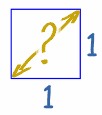

数字的变化
计数
我们可以用数字来 计数: 1, 2, 3, 4, 等等
这样的计数方式从很久很久以前就开始了。
- 我今天吃了"2 顿饭"
- 书包里有 "5 本书"
- 我买了 "2 瓶可乐"
所以我们有了这样的方式
数字: {1, 2, 3, 4, 5, 6, 7, 8, 9, 10 ...}
十个、一百个、一千个、一万个....,嗯，只要我们愿意，我们可以一直数下去。
零
现在我们每个人都很熟悉这个概念" 零", 但对于很久很久以前的我们,情况却不是这样的,因为我们计数是和现实里的东西对应的 ... 如果这里什么也没有, 那我们也就没有必要计数了。
例如: 小河里有小鸭子，一只；如果小河里什么也没有
 |
 |
|
| 一只小鸭子 | 没有小鸭子? 没有怎么计数呢 |
|---|
占位符
很久很久以前，我们经常碰到这样的情况， 如何区别这两个数 4 和 40. 没有零这个符号的话，他们看起来是一样的。
聪明的我们很快就想到一个好注意"占位符", 用一个特殊的符号来表示这里什么也没有，是空空的
| 1 1 |
"1 1" 意味着 "101" (百位是1, 十位是零 , 个位是1) |
我们创造这个概念以后, 在很长很长的时间里，都没有把它当做一个像1、2、3这样真正的 数字.
慢慢的，我们开始接受它了
"我有两个苹果,中午把它们吃的干干净净的， 那现在我有 零 个苹果...!"
整数
现在，让我们把零和开始时候我们拿来计数的数字放在一块，我们有了 一组新的数字.
来，我们一起给这组新的数字起个名字吧, 大声说"整数":
整数: {0, 1, 2, 3, ...}
自然数
我们都听过这个概念 "自然数" ... 它有两种含义:
- "计数的数字": {1, 2, 3, ...}
- 或者 "整数": {0, 1, 2, 3, ...}
认为自然数不包含零的其中一个理由是因为人们（尤其是小孩）在开始学习数字的时候是由“一、二、三...”开始，而不是由“零、一、二、三...”开始, 因为这样是非常不自然的。
负数
整个数学的历史是由一个接着一个的问题组成的;我们碰到一个问题,绞尽脑汁的去寻找答案,接着又出现新的问题......
现在,我们碰到的问题是
"我们在数数的时候总是正着数, 那我们可不可以 到 着数呢?"
比如,我们正着数数: 1, 2, 3, 4, ...
|
... 如果我们到过来,从大到小: 3, 2, 1, 0, ... 然后,会出现什么? |
答案就是: 我们碰到了 负数:
现在,我们即可以从小到大数数，也可以到过来,从大到小
可是一个负数对我们来说到底意味这什么?
比如,我们经常说的温度低于零度.

|
先看看我们的例子 温度. 我们把水结冰时候的温度定义为 (0° C) ... 这样,当我们碰到低于这个温度的时候,我们称之为负几度. -20° C is 20° 低于零度. |

负的小猫
在理论上,我们可以有负数的小猫
故事是这样开始的 ...我们有三个好朋友, 每个好朋友我们想送一只小猫咪做礼物, 就像图画里的,我们只有 两只小猫 来送给我们的朋友... 这样的话 我们少一只小猫咪 ... 我们把这个称为负了一只小猫咪!
有了负数以后,我们的计数一下扩充了一倍 ...
整数
加上负数以后, 我们对现在的数字有了 新的名称 那就是 整数
整数: {..., -3, -2, -1, 0, 1, 2, 3, ...}
整数包括,零, 正数, 和负数, 这样,我们就可以从零出发任意的向两边延伸了.
分数
|
我们有一个西瓜需要分给几个小伙伴吃,很自然的,我们会拿刀把它切开了. 这样,我们又碰到了新的数字 |
我们拿了一个西瓜 (1) 把它分成两半 (2) 现在每一半是 (1/2)个西瓜
只要碰到分东西,我们就需要分数,比如, 我们现在有四个苹果 (4) 要分给三个小伙伴 (3) ... 那每个小伙伴拿到了 (4/3) 个苹果.
有理数
有理数,是整数和分数的统称,一切有理数都可以化成分数的形式.
例如, "a" 和 "b" 是 整数, 根据我们上边描述的 a/b 是一个有理数.
例如: 如果 a 是 3 b 是 2, 我们可以得到:
a/b = 3/2 = 1.5 是一个有理数
这里有一个例外就是当 b 是零, 因为 零做被除数 是没有意义的.
有理数: {a/b : a 和 b 是整数, b不能为零}
所以我们经常说的一半 (½) 是一个有理数.
2 也是一个有理数, 按照我们的定义,2可以写成 2/1
有理数包括:
- 所有的 整数
- 和所有的 分数.
让我们找一个很复杂的数字 88.8888888888 .
88.8888888888 = 888888888888 / 1,000,000,000
好了,现在我们有了零、负数、分数,好像什么也不缺了
不过,不过,这里是什么情况
|  | 如果我们画一个边长为一米的正方形, 它的对角线的长度是多少? 问题很简单是不是 |
答案在这里 2的平方根, 大概是 1.4142135623730950...(等等等等)
这个数字很奇怪,和我们上边学过的任何一类数字都不同 ...
好了,看来我们又发现了新的数字,让我们给它起个名字
不是有理数的话,我们叫它 无理数 !
无理数
根号 (√2) 是一个 无理数 . 它不能表示成两个整数之比,是一个看上去毫无规律的无限不循环小数.
事实上,根号 2 只是最普通的无理数.在无理数大家庭中,还有很多比根号 2 更诡异的数. Pi (π) 是最耀眼的一个.
这么奇怪的数,会有什么用途呢
- 表示正方形的对角线长度
- 涉及到圆周的计算(使用 π),
- 更多更过
如果我们把有理数和无理数放在一起,会出现什么
实数
对,这个名字不错就是它了
很明显,实数包括:
- 有理数, 和
- 无理数
实数: {x : x 是有理数 或者 是无理数}
我们可以把实数想象为在一条直线上的 任意点 :
我们这里只是显示了有限的几位数字
实际上实数有很多很多很多位数字!
现在,直线上的任意 点 我们都可以用实数来表示了!
可是,可是问题又出现了
让我们想象一下 ...
"负一的平方根是什么?"
换句话说, 什么样的数字自己和自己相乘的结果是负一?
直到现在为止,我们不可能得到这样的结果,比如:
- 1×1 = 1,
- (-1)×(-1) = 1 (因为 a 负负得正)
那什么样的数字,自己和自己相乘的结果是 -1?
不可能的事情.对不对
"好吧,我们好像发现了什么,让我们试试看"
虚数
|
让我们先 假定 存在一个这样的数,它和自身的乘积是负一. 我们把这个数用字母: i来表示 |
现在我们可以用它 来回答这些问题了:
比如: -9的平方根是什么 ?
答案是: √(-9) = √(9 × -1) = √(9) × √(-1) = 3 × √(-1) = 3i
好了,有了 i以后, 这些问题对我们来说一下变简单 了.
i 还有一个很有意思的属性,如果我们对 (i×i)求平方 得到 -1 ,这个结果是一个实数.
虚数: 它的平方是一个负 实数.
任何实数和i 的乘积都是一个虚数. 我们来看看下边的例子:
- 3i
- -6i
- 0.05i
- πi
"如果我们把一个实数 和 一个虚数 放在一起,会是什么?"
复数
是的,如果我们把实数和虚数放在一起,我们得到了一个新的数字 复数 就像下边的例子:
- 3 + 2i
- 27.2 - 11.05i
一个复数包含一个实数部分和一个虚数部分, 每一部分都可以为零
一个实数是一个复数 (如果我们把虚部设为零的话):
- 4 也是一个复数 (因为它可以转换为 4 + 0i)
同样的,一个虚数也是一个复数 (如果我们把实部设为零):
- 7i 是一个复数 (因为它可以转换为 0 + 7i)
看看,我们最后得到了什么,复数,它包括我们学过的所有数.
好了,我们终于可以休息一下了!
从最简单最基本的计数单位到很复杂的复数,让我们来回顾看看我们学过的内容
| 类型 | 描述 |
|---|---|
| 计数 | {1, 2, 3, ...} |
| 整数 | {0, 1, 2, 3, ...} |
| 整型 | {..., -3, -2, -1, 0, 1, 2, 3, ...} |
| 有理数 | a/b : a 和 b都是整数, b 不能为零 |
| 无理数 | |
| 实数 | 有理数和无理数 |
| 虚数 | |
| 复数 | 实数和虚数 |